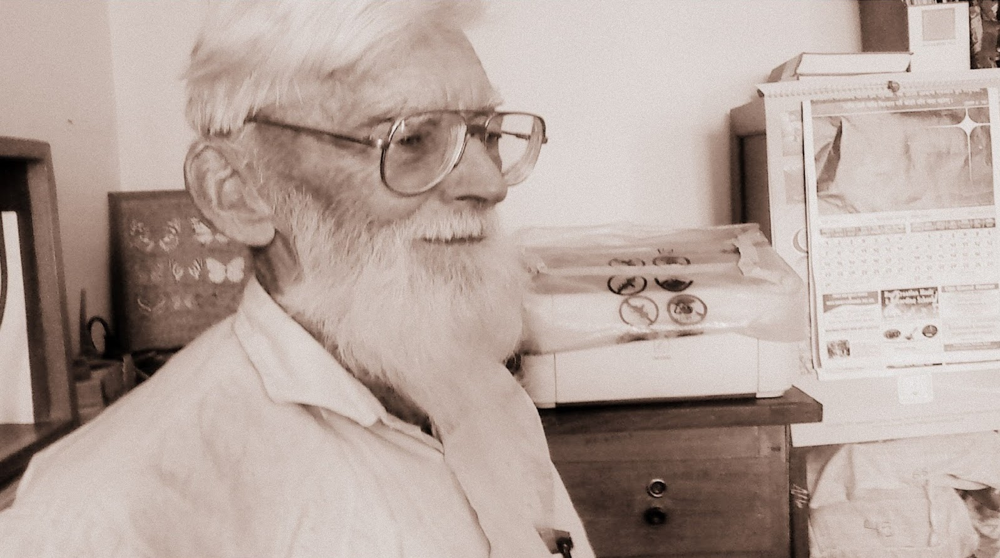
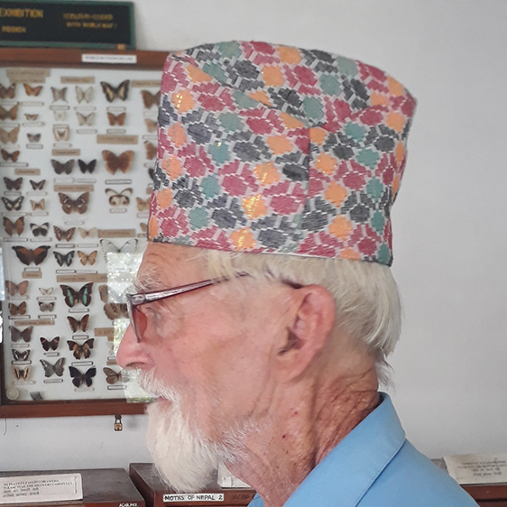

<link rel="icon" href="favicon.svg" />
<link rel="stylesheet" type="text/css" href="styles.css">
<link href="https://fonts.googleapis.com/css2?family=Damion&family=Michroma&family=Righteous&display=swap" rel="stylesheet">
<main id="main">
	<section id="top-part">
  <h1 id="title">Colin Philip Smith</h1>
  <p>Mathematician, Lepidopterist, Author, Teacher and finally Nepali Citizen.</p>
  <figure id="img-div">
    
    
     <figcaption id="img-caption">
      Both pictures: Colin Smith in his research Office.
    </figcaption>
  </figure>
    
</section>
  <section id="tribute-info">
    <h3 id="headline">Story behind "Putali Bajay"</h3>
    <ul type="none">
      <li><strong>Introduction:</strong> Colin Philip Smith AKA Putali Bajay, was born on 24 November 1936 in Highgate, England from father, Ebenezer John Smith, and mother, Rose Lilian Boosey. As a child, he was attracted by his uncle’s collection of British Butterflies and Moths.</li>
      <li>
        <strong>Mission:</strong> At age 29, Colin came to Nepal as United Mission Teacher.
He taught science and Math for 7 years in different parts of Nepal mainly in Gorkha, Kathmandu and Pokhara.
      </li>
      <li>
        <strong>Passion: </strong> In 1973, while working for Nature Science Museum at Tribhuwan University in Kathmandu, he visited 40 districts of Nepal, most of them were visited on foot.
He collected 660 species of butterfly. 30 scientific articles and 10+ books were published based on this research. Collection of which are displayed at Natural History Museum, Kathmandu; Annapurna Butterfly Museum, Pokhara; and at Kathmandu University in Dhulikhel. Colin became so passionate that people began to call him "Putali Bajay", meaning ‘butterfly Grandpa’, the name he is very proud of.
He dedicated more than his 5 decades of his life for the research and he believes that Nepal is rich in natural science and is in need for biodiversity conservation.
      </li>
      <li>
        <strong>His Only Wish:</strong> Currently residing alone in small cottage of Lama Village in Pokhara Nepal,
he has immense love for Nepal and Nepalese people. His only wish is to die as Nepalese citizens, to be cremated and his ashes be thrown in Seti River Pokhara Nepal.
      </li>
      <li>
        <strong>Wishes come true:</strong> Knowing this, On 2018, many supporters has signed a petition to the Government of Nepal and the Department of Immigration Nepal to grant him Nepali Citizenship. As writer Paulo Coelho has said: "When you really want something to happen, the whole universe conspires so that your wish comes true." similarly, following long wait, he was awarded Nepali honorary citizenship certificate in December 2019.
      </li>
      <li>
        <strong>Notable Works:</strong> 
        Illustrated Checklist of Nepal's Butterflies, Butterflies of Nepal, Lepidoptera of Nepal.
      </li>
    </ul>
    <blockquote>
      <p>
        “I quit teaching because I wanted to study the butterflies, which have always fascinated me.”
      </p>
      <p>
        “I love what I do and I shall continue my stay in Nepal to study the butterflies.”
      </p>
      <p>
        “People are happy watching and photographing butterflies and not collecting them, as it was fashion some time ago.”
      </p>
    </blockquote>
    <h3>
     To learn more about Colin Philip Smith-
      <a
        id="tribute-link"
        href="https://en.everybodywiki.com/Colin_Philip_Smith"
        target="_blank"
        >Wiki Valley,
    </a>
      <a
        id="tribute-link"
        href="http://udayachaulagain.com.np/putali-baje/"
        target="_blank"
        >Udaya,
    </a>
      <a
        id="tribute-link"
        href="https://thehimalayantimes.com/nepal/putali-baje-obliged-with-nepali-citizenship/"
        target="_blank"
        >The Himalayan Times,
    </a>
        <a
        id="tribute-link"
        href="https://english.onlinekhabar.com/the-delicate-beauty-of-nepals-butterflies.html"
        target="_blank"
        >Online Khabar,
    </a>
      <a
        id="tribute-link"
        href="https://archive.nepalitimes.com/article/Nepali-Times-Buzz/the-butterfly-effect-nepal-butterfly-destination,797"
        target="_blank"
        >Nepali Times,
    </a>
      <a
        id="tribute-link"
        href="http://2.bp.blogspot.com/-5-2q-CMyNnk/UT8bv1DR_2I/AAAAAAAAAII/Vn41sWHH7C8/s1600/lkk.jpg"
        target="_blank"
        >Picture Source,
    </a>
      <a
        id="tribute-link"
        href="https://www.gopetition.com/petitions/nepali-citizenship-for-colin-smith-putali-bajey.html"
        target="_blank"
        >Go Petition
    </a>

    </h3>
  </section>
  <footer>
  	Tribute Page project for FreeCodeCamp.org. ©R. Thapa.
  </footer>
</main>